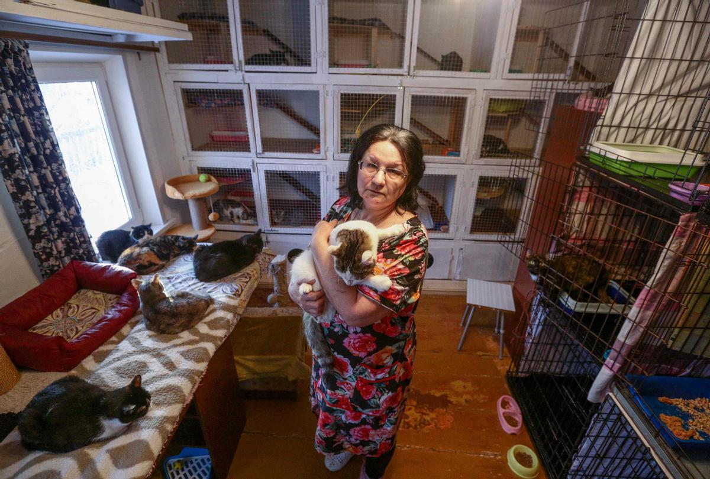
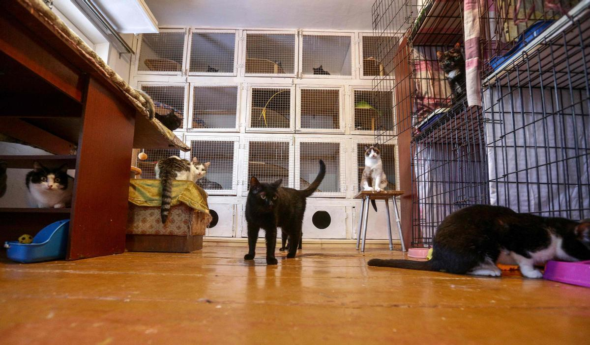

Fundación Esperanza Animal es una organización sin fines de lucro que se forma con el objetivo de mejorar la calidad de vida de las mascotas abandonadas o nacidas en la calle y a la vez disminuir la sobre población a través de la educación y concienciar sobre la temática de Tenencia Responsable en nuestro país.
Esta es la Señora Margarita, una de nuestras mas fieles colaboradoras, quien se a encargado de cuidar a cientos de gatos abandonados.
 